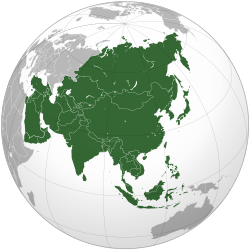
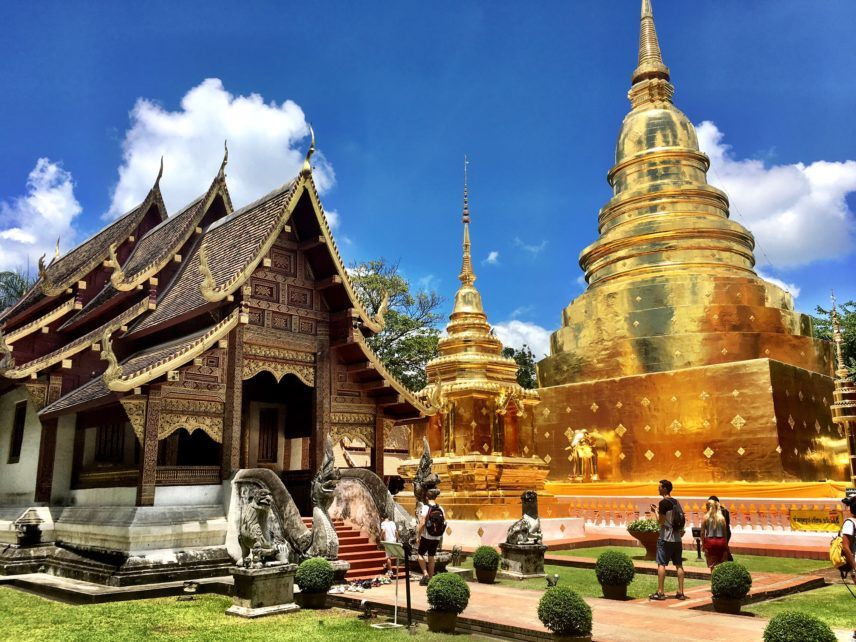

ÁSIA |
|
Devido à extensão do continente e às altas cadeias montanhosas que impedem a passagem do ar frio do norte em direção ao sul e do ar quente das correntes marítimas do sul em direção ao norte, a Ásia apresenta um clima bastante variado com regiões desérticas (Deserto de Gobi e do Tibet) na parte central do continente e nas penínsulas Iraniana e Arábica. Enquanto que, nos locais de grande altitude o clima é bastante frio como, por exemplo, as Cordilheiras do Himalaia onde a temperatura chega a até -30ºC. Entretanto, o clima característico na região é o clima de monções, ventos periódicos que atingem o continente devido às variações de pressão atmosférica entre este e o mar. O relevo asiático também é bastante variado. Lá se encontra a maior depressão do mundo: o Mar Morto está a 392m abaixo do nível do mar, e o ponto mais alto: o Monte Everest com 8.848m. O continente também se caracteriza pelas inúmeras penínsulas e planaltos como as penínsulas da Coréia, do Decã, na Índia e a Península Arábica que compreende a Arábia Saudita, os Emirados Árabes, Catar, Omã e o Iêmen. Os principais planaltos são: o Planalto do Pamir (a mais de 4.000m), o Planalto do Tibet, da Mongólia, do Decã (parte central da Península do Decã), o Planalto da Anatólia, da Arábia, do Irã e o Planalto Central Siberiano. Entretanto, podemos dizer que as regiões mais importantes do continente asiático são as planícies, pois é justamente nelas onde surgiram as primeiras civilizações do continente, como, por exemplo, as Planícies Mesopotâmica e Indo-gangética. É nelas também onde encontramos os principais rios da região: o Rio Amarelo e o Rio Azul, na Planície da China, os Rios Eufrates e Tigre na Mesopotâmia, o Rio Ganges e o Rio Indo na Planície Indo-gangética. A Planície Siberiana se destaca pelos rios que permanecem congelados na maior parte do ano. Já a Planície do Mekong se caracteriza pelas culturas de arroz, o principal alimento da região.A vegetação do continente também varia bastante por causa do clima e do relevo. As principais são a Taiga, Tundra, Taiga Siberiana, Estepes, Pradarias, Savanas e as Florestas equatoriais e tropicais nas regiões próximas ao Equador e subtropical e temperada nas regiões da Coréia (do Norte e do Sul) e no Japão. |

